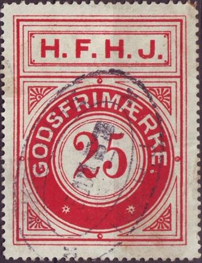
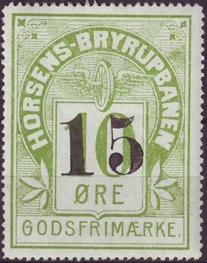

Small and larger sized stamps I've also seen the 40 o in the lage design and the 45 o large design without overprint.
Return To Catalogue - Denmark - Denmark Railway Stamps, overview
Note: on my website many of the
pictures can not be seen! They are of course present in the
catalogue;
contact me if you want to purchase it.
Small and larger sized stamps I've also seen the 40 o in the lage
design and the 45 o large design without overprint.

"H.F.H.J. GODSFRIMAERKE" 25 o red. Also a
"H.F.H.J. SUPPLEMENTSMAERKE" in 10 o green.
I've seen the above 25 o with a "45" overprint.

Coat of arms design
Map of the railway (and ferry): 60 o;
"60" (red) on 40 o, "35" on 60 o,
"70" on 60 o, "75" (at least 3 types) on 60
o, "100" on 60 o.
Coat of arms: 30 o (see image above); "35" (at least 3
different types) on 30 o, "150" on 30 o
Modern train in landscape: 90 o; "100" on 90 o,
"150" on 90 o.
Tower of Hillerød: "30" on 25 o, "110" on
100 o, "150" on 25 o
View of Fredericksvaerk: 250 o; "30" on 40 o,
"300" on 250 o.
Hundested beach with lighthouse: 75 o
Radio tower and railway track: 2.25 Kr blue and black, 3.00 Kr
orange and black, 4.00 Kr blue and black, 14.00 Kr yellow, black
and red (with "1975" inscription); "330" on
2.00 Kr green and black, "340" on 2.00 Kr green and
black, "620" on 3.00 orange and black. .

1925 Design similar to the Hjorring - Aalbeck Banen: Large "H" in the upper left corner and large "B" in the upper right corner, inscription "GODS FRIMAERKE": 5 o blue, 25 o brown (?), 35 o green

In this design I have seen 15 o brown, 25 o blue (with
"AABYBRO" and "BANEN" written as two words),
35 o violet and 60 o blue. The design is similar to that of the
H.L.A. (Hjorring Lokken Aabybro) railway, but larger. Also
overprints: "10" (at least 3 types) on 15 o brown,
"45" (at least two types) on 15 o brown, "50"
on 60 o blue. .
1925 Design similar to the Hjorring - Hirtshals Banen: Large "H" in the upper left corner and large "A" in the upper right corner, inscription "GODS FRIMAERKE": 5 o blue, 25 o brown, 35 o green, 50 o red.


I've seen in the smaller design: 5 o blue, 25 o brown, 35 o
green, 50 o red. In the larger design 15 o green, 25 o orange, 35
o blue and "60" on 35 o blue.

1926 Design similar to the Hjorring Aabybro stamps, but smaller.
I have seen the values 5 o blue, 25 o brown, 35 o green, 50 o
red.


Large sized stamps, here cancelled in 1907 and 1931. Train with
winged wheel below 25 o red and 40 o blue. The Odsherreds
Jernbane used a very similar design stamps, but with a star
instead of the train in the center.
In this large design I've seen
20 o red, 25 o red, 40 o blue, 50 o blue, 90 o blue
"60 ØRE" on 50 o blue. .

Smaller sized stamp
In this smaller design I have seen:
10 o yellow and black, 20 o yellow and black, 50 o green and
black, 60 o yellow and black, 60 o green, 75 o blue and black,
125 o green and black, 175 o blue and black, 200 o violet and
black, 220 violet and black, 225 o green and black, 300 o lilac
and black, 400 o blue and black, 500 o red and black.
"80 Øre" on 40 o lilac, "100 øre" on 400 o
blue and black, "125 øre" on 50 o green and black.

"H.T.. Ekspress" 50 o black and red.
1899 to 1929?


10 o green (1899), 10 o green (1909), 15 o red, 20 o red (1899),
20 o brown (1917) and 30 o brown (1917), note the different shape
of the "G" in "GODSFRIMAERKE".The value 25 o
blue also exists.


Handstamped "15" (violet) on 10 o green. Also "50
Øre" on 10 o green

"5" on 10 o green and "15" on 10 o green
1918 "20" on 10 o green (all 9 types of overprint,
reduced sized images)
{kind=link}
{kind=link}
{kind=link}